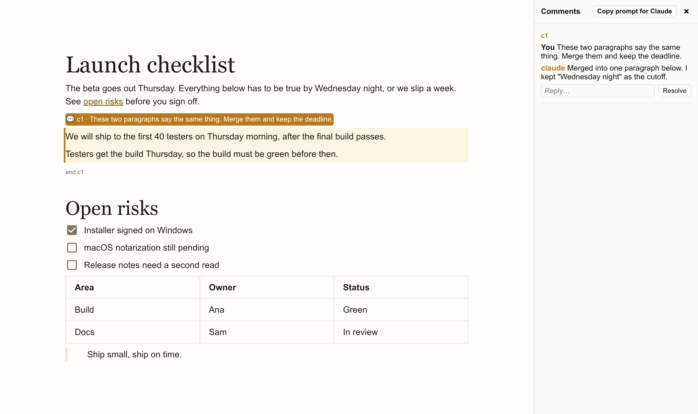

md-read shows a Markdown file the way it's meant to look, lets you edit the rendered page directly, and saves plain Markdown back to the same file. No vault, no account, no sync.

md-read notes.md &The window opens on the rendered document. Click anywhere and type. Ctrl+S writes it back as Markdown through the same pipeline that renders it, so your - bullets, tables and footnotes come back the way you wrote them.
It covers CommonMark and GitHub-flavored Markdown: tables, task lists, strikethrough, autolinks and footnotes. Ctrl+Click follows links, including #heading jumps and relative .md files.
Hover a paragraph, heading, list or table and a 💬 appears in the margin. Click it (or select several blocks first) and write a question or a challenge: "is this claim defensible?", "tighten this", "you're wrong about the dates".
Claude answers in that passage's own thread, usually within a few seconds. Reply to keep going. When you ask for a change, Claude rewrites just that passage in place, and one Ctrl+Z undoes it.
Threads live inside the file, around the text they're about:
<!-- @claude c1: is "fastest editor ever made" defensible?
claude: No. One benchmark against vim disproves it. -->
md-read opens instantly and stays responsive on large files.
<!-- /@claude c1 -->They're ordinary HTML comments, so GitHub and every other Markdown viewer hide them, and so does md-read: you see a highlight and a 💬 in the margin, never the tags. Threads are like tracked changes. When you're done, Accept & resolve removes the markers and the file is plain Markdown again.
md-read talks to Claude through your own Claude Code install and login, with Claude's tools switched off: it can answer, and the app applies any rewrite itself. Nothing is sent unless you write in a thread. Without Claude Code, threads still work as notes, and the /md-comments skill can answer them later.
| Key | Does |
|---|---|
| Ctrl+S | Save. Add Shift to save as. |
| Ctrl+O | Open another file |
| Ctrl+Click | Follow a link |
| 💬 or Ctrl+Alt+M | Start a Claude thread on a passage |
| Ctrl+Shift+M | Show or hide threads |
| F1 | About: version and keys |
| Ctrl++ - 0 | Zoom in, out, reset |
| Ctrl+P | Print (comments are left out) |
Linux, no root needed:
curl -fsSL https://raw.githubusercontent.com/KajiMaster/markdown-reader/main/install.sh | shEach release also has .deb, .rpm and .AppImage builds, a .msi and .exe for Windows, and a universal .dmg for macOS. Arch users can build the AUR package in aur/.